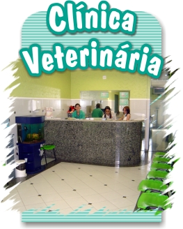

Nuestra Veterinatria
 Más de 30 colaboradores son liderados actualmente por un grupo de socios desde el 2007, somos desde entonces dos veterinarios un administrador y un Publicista quienes tienen a cargo la dirección de 5 sedes en Bogotá.
Con un equipo de Médicos Profesionales, Cirujanos, practicantes en veterinaria, administradores de sede y especialistas en Grooming venimos desempeñando la ardua tarea de mantener con alegría la salud de las mascotas en Bogotá, asesorando y cuidando, atendiendo urgencias 24 horas y dejando a la moda los cortes de nuestros fieles amigos de cuatro patas.
Luego del paso de los años tenemos servicios cada vez más elaborados e integrales, como la Medicina prepaga o EPS para mascotas, laboratorio clínico y de diagnóstico de imágenes, guardería campestre y un sin número de proyectos que buscan tener una cobertura integral en la ciudad.
 La Clínica Veterinaria Caninos & felinos cuenta con el servicio de consulta general, interconsulta y consulta especializada con cita previa, para que tu mascota tenga un amplio portafolio de servicios y de atención especializada y personalizada.
La Clínica Veterinaria Caninos & felinos cuenta con el servicio de consulta general, interconsulta y consulta especializada con cita previa, para que tu mascota tenga un amplio portafolio de servicios y de atención especializada y personalizada.{kind=link}
{kind=link}
{kind=link}
{kind=link}
{kind=link}
{kind=link}